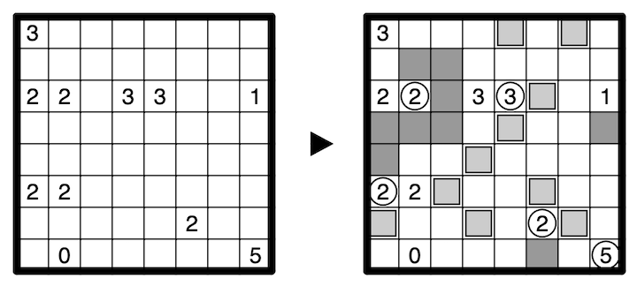

Additionally, crates may be placed in some unclued, unshaded cells such that no crate shares an edge with either a shaded cell or another crate. Crates block connectivity of unshaded cells.
A clued cell has one of two meanings:
1) The total count of unshaded cells seen in all four directions, including itself, where shaded cells, crates, and the edge of the grid obstruct vision.
2) The total number of crates in the same row or column as the clue cell. No two orthogonally adjacent clues may both be of this type.
An 8x8 example is provided:
